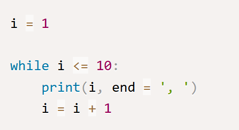
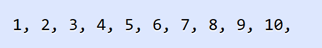
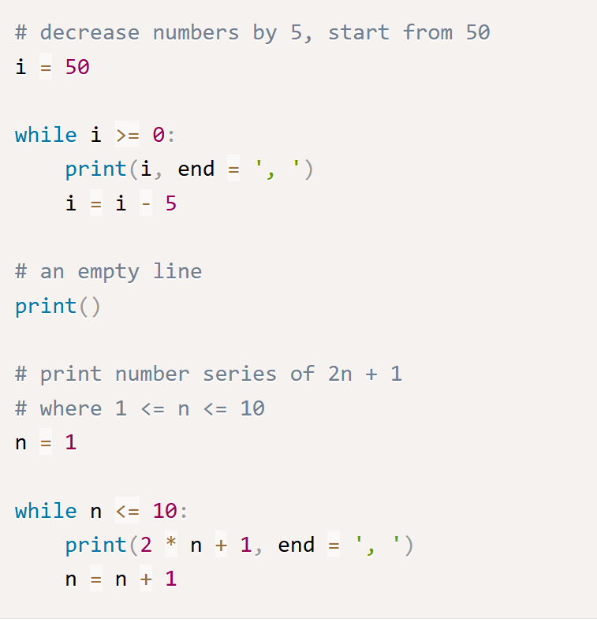
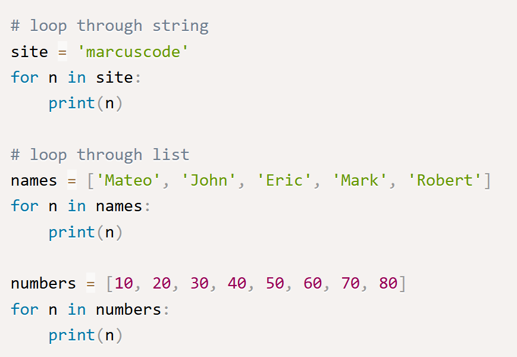
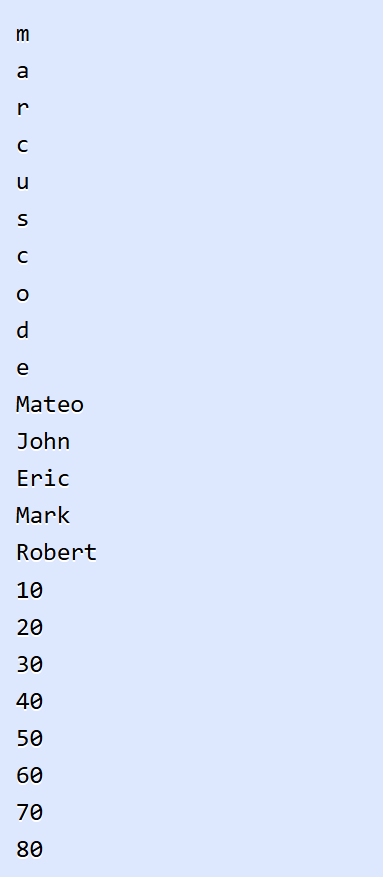
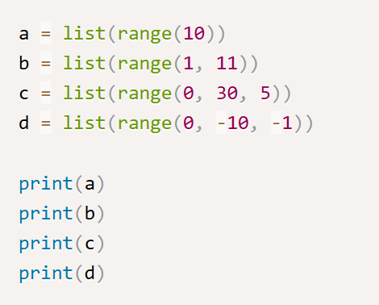
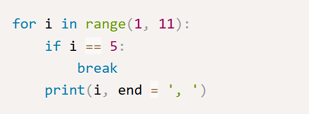
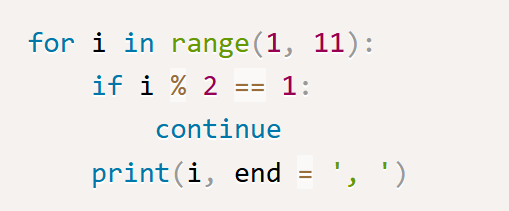
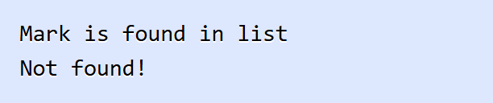

ในบทนี้ คุณจะได้เรียนรู้คำสั่งวนซ้ำในภาษา Python เราจะพูดถึงการควบคุมการทำงานโดยการใช้คำสั่ง while loop และ for loop คำสั่งเหล่านี้สามารถควบคุมโปรแกรมให้ทำงานซ้ำๆ ในเงื่อนไขที่กำหนดและเพิ่มความสามารถของการเขียนโปรแกรม ตัวอย่างของการทำงานซ้ำๆ นั้นพบเห็นได้ทั่วไปในชีวิตประจำวัน เช่น โปรแกรมพยากรณ์สภาพอากาศที่เกิดขึ้นในทุกๆ วัน หรือการไปทำงานของคุณในทุกๆ เช้า เป็นต้น ดังนั้นแนวคิดเหล่านี้จึงถูกนำมาใช้กับการเขียนโปรแกรม
while loop เป็นคำสั่งวนซ้ำที่ง่ายและพื้นฐานที่สุดในภาษา Python คำสั่ง while loop นั้นใช้ควบคุมโปรแกรมให้ทำงานบางอย่างซ้ำๆ ในขณะที่เงื่อนไขของลูปนั้นยังคงเป็นจริงอยู่ นี่เป็นรูปแบบของการใช้งานคำสั่ง while loop ในภาษา Python
ในรูปแบบการใช้งานคำสั่ง while loop นั้น เราสร้างลูปด้วยคำสั่ง while และตามด้วยการกำหนด expression ซึ่งเป็นเงื่อนไขที่จะให้โปรแกรมทำงาน ซึ่งโปรแกรมจะทำงานจนกว่าเงื่อนไขจะเป็น False และสิ้นสุดการทำงานของลูป ภายในบล็อคคำสั่ง while นั้นประกอบไปด้วยคำสั่งการทำงานของโปรแกรม ต่อไปมาดูตัวอย่างโปรแกรมนับเลขที่แสนคลาสสิคด้วยการใช้คำสั่ง while loop ในภาษา Python
นี่เป็นผลลัพธ์การทำงานของโปรแกรมในการแสดงตัวเลข 1 ถึง 10 โดยการใช้คำสั่งวนซ้ำ คุณจะเห็นว่าเราสามารถเขียนโปรแกรมได้ง่ายขึ้นโดยที่คุณไม่จำเป็นต้องใช้ฟังก์ชัน print() เพื่อแสดงผล 10 ครั้ง มาดูตัวอย่างการใช้งาน loop เพิ่มเติม
ขึ้นกับว่าคุณต้องการใช้ loop ทำอะไร ต่อมาเป็นตัวอย่างของโปรแกรมในการแสดงตัวเลขตั้งแต่ 50 จนถึง 0 โดยลดค่าลงมาทีละ 5 และในลูปที่สองเป็นการแสดงลำดับของอนุกรมเลขคณิตจากสูตร 2n + 1 โดย n มีค่าตั้งแต่ 1 ถึง 10
นี่เป็นผลลัพธ์การทำงานของโปรแกรมในการใช้ while loop แสดงค่าที่ลดลงและแสดงลำดับของอนุกรมเลขคณิต
คำสั่ง for loop เป็นคำสั่งวนซ้ำที่ใช้ควบคุมการทำงานซ้ำๆ ในจำนวนรอบที่แน่นอน ในภาษา Python นั้นคำสั่ง for loop จะแตกต่างจากภาษาอื่นๆ อย่างภาษา C มันมักจะใช้สำหรับการวนอ่านค่าภายในออบเจ็ค เช่น ลิสต์หรือออบเจ็คจากฟังก์ชัน range() เป็นต้น มาดูตัวอย่างการใช้งานคำสั่ง for ในภาษา Python
ในตัวอย่าง เป็นการใช้คำสั่ง for loop ในการวนอ่านค่าในตัวแปร String และอ่านข้อมูลภายในลิสต์ ในลูปแรกเป็นการวนอ่านค่าตัวอักษรในตัวแปร String site โดยโปรแกรมจะวนอ่านค่าทีละตัวมาเก็บไว้ในตัวแปร n ซึ่งเป็นพารามิเตอร์ของคำสั่ง for loop และวนอ่านค่าจนครบทุกตัวอักษรและจบการทำงานของ loop และอีกในสอง loop ต่อมาเป็นการใช้คำสั่ง for loop ในการวนอ่านข้อมูลภายในลิสต์ของ String และตัวเลข
นี่เป็นผลลัพธ์การทำงานของโปรแกรมในการใช้คำสั่ง for loop วนอ่านค่าภายในออบเจ็ค String และ List ในภาษา Python
ในภาษา Python เรามักจะใช้คำสั่ง for loop กับฟังก์ชัน range() ในการวนอ่านค่าออบเจ็คของตัวเลข ฟังก์ชัน range() นั้นเป็น built-in ฟังก์ชันใช้สำหรับสร้างออบเจ็คของตัวเลข โดยมีพารามิเตอร์ 3 ตัว คือตัวเลขเริ่มต้น ตัวเลขสุดท้าย และค่าที่เปลี่ยนแปลงในลำดับของตัวเลข มาดูตัวอย่างการใช้งานฟังก์ชัน range() ในภาษา Python
นี่เป็นตารางของตัวดำเนินการเปรียบเทียบในภาษา Python
ในตัวอย่าง เป็นการสร้างออบเจ็คตัวเลขจากฟังก์ชัน range() หลังจากนั้นเราแปลงจากออบเจ็คให้เป็นลิสต์ด้วยฟังก์ชัน list() ในตัวแปร a นั้นเราใช้พารามิเตอร์เดียวคือ 10 เข้าไปในฟังก์ชัน ซึ่งเป็นการสร้างออบเจ็คของตัวเลขจาก 0 ถึง 9 (ไม่รวม 10) ในตัวแปร b นั้นใช้พารามิเตอร์สองตัวในการสร้างจาก 1 ถึง 10 (ไม่รวม 11) ต่อมาในตัวแปร c และ d เป็นการใช้งานพารามิเตอร์ครบทุกตัว โดยพารามิเตอร์ตัวสุดท้ายเป็นค่าที่เพิ่มและลดในลำดับของตัวเลข
นี่เป็นผลลัพธ์การทำงานของโปรแกรมจากการสร้างออบเจ็คของตัวเลขด้วยฟังก์ชัน range() หลังจากนั้นแปลงให้เป็นลิสต์ด้วยฟังก์ชัน list()
คำสั่ง break ใช้สำหรับหยุดการทำงานของ loop ในทันทีโดยไม่จำเป็นต้องให้เงื่อนไขเป็น False ก่อน มันมักจะใช้ในกรณีที่เราต้องการสร้างเงื่อนไขให้โปรแกรมออกจาก loop ที่นอกเหนือจากเงื่อนไขของ loop มาดูตัวอย่างการใช้งานคำสั่ง break ในภาษา Python
ในตัวอย่าง เป็นโปรแกรมในการแสดงตัวเลขจาก 1 ถึง 10 เราได้สร้างเงื่อนไขด้วยคำสั่ง if ว่าถ้าหากค่าของตัวแปร i นั้นเท่ากับ 5 เราจะเรียกใช้คำสั่ง break นั้นหมายความว่าโปรแกรมจะออกจาก loop ในทันที ถึงแม้ว่าการวนค่าในคำสั่ง for นั้นจะยังไม่เสร็จสิ้น
นี่เป็นผลลัพธ์การทำงานของโปรแกรมที่แสดงเพียง 1 ถึง 4 เพราะว่าโปรแกรมเจอคำสั่ง break เมื่อค่าของ i นั้นเท่ากับ 5
ไม่เหมือนคำสั่ง break คำสั่ง continue ใช้สำหรับข้ามการทำงานของ loop ไปทำงานในรอบใหม่ทันทีโดยไม่สนใจคำสั่งที่เหลือหลังจากนั้น มาดูตัวอย่างการใช้งานคำสั่ง continue เพื่อแสดงผลตัวเลขคู่ในภาษา Python
ในตัวอย่าง เราใช้คำสั่ง for loop ในการวนจาก 1 ถึง 10 เช่นเดียวกันกับในตัวอย่างที่แล้ว แต่สิ่งที่แตกต่างกันเราสร้างเงื่อนไขให้โปรแกรมข้ามการแสดงผลของเลขคี่ไปจากเงื่อนไข i % 2 == 1 ทำให้คำสั่งการแสดงผลถูกข้ามการทำงานไปรอบใหม่ในทันที
นี่เป็นผลลัพธ์การทำงานของโปรแกรมสำหรับการแสดงผลเลขคู่ 1 ถึง 10
จากการใช้คำสั่ง break และ continue กับ loop นั้นถึงแม้ว่าเราจะแสดงตัวอย่างเพียงการใช้กับคำสั่ง for แต่คุณสามารถใช้ได้กับ loop ทุกประเภทแม้กระทั่งกับคำสั่ง while ก็เช่นกัน
ในการทำงานกับคำสั่งวนซ้ำนั้น เราอาจจะใช้คำสั่ง else clause เพื่อกำหนดบล็อคการทำงานให้กับ loop ได้ โดยในบล็อคของคำสั่ง else นั้นจะทำงานเมื่อโปรแกรมจบการทำงานโดยสิ้นสุดการอ่านค่าในลิสต์สำหรับ for loop และเมื่อเงื่อนไขเป็นเท็จสำหรับ while loop แต่ต้องไม่จบการทำงานของลูปด้วยคำสั่ง break มาดูตัวอย่างการใช้งาน else clause กับ loop ในภาษา Python
ในตัวอย่าง เป็นโปรแกรมในการค้นหาชื่อภายในลิสต์ ใน loop แรกเป็นการค้นหาชื่อ "Mark" ภายในลิสต์ ถ้าหากพบชื่อดังกล่าวเราแสดงผลว่าพบและเรียกใช้คำสั่ง break เพื่อหยุดการทำงานของ loop นั่นทำให้โปรแกรมจบการทำงานของ loop และไม่ทำงานในบล็อคของคำสั่ง else เพราะว่าโปรแกรมจบการทำงานของ loop ด้วยคำสั่ง break
หลังจากนั้นเป็นการค้นหาชื่อ "Danny" ภายในลิสต์ เพราะว่าโปรแกรมนั้นได้วนอ่านค่าภายในลิสต์จนครบและจบการทำงานของลูป ทำให้โปรแกรมทำงานในบล็อคของคำสั่ง else และแสดงผลว่าไม่พบ
นี่เป็นผลลัพธ์การทำงานของโปรแกรมในการใช้คำสั่ง else clause กับ loop ในการค้นหาชื่อภายในลิสต์
ในบทนี้ คุณได้เรียนรู้และการใช้งานคำสั่งวนซ้ำในภาษา Python ด้วยการใช้คำสั่ง while loop และ for loop นอกจากนี้เรายังพูดถึงการใช้งานฟังก์ชัน range() เพื่อสร้างออบเจ็คของตัวเลขเพื่อใช้งานกับคำสั่ง for loop และคุณได้รู้จักกับการใช้งานคำสั่ง break และ continue สำหรับหยุดการทำงานและข้ามการทำงานของลูปไป และการใช้งาน else clause กับลูปเมื่อโปรแกรมไม่ออกจากลูปด้วยคำสั่ง break